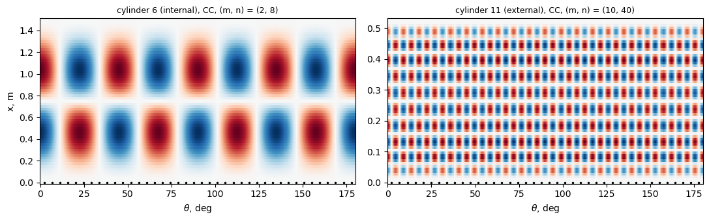
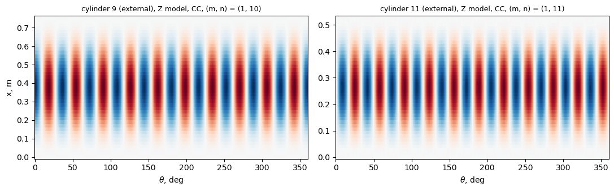

Discrete and smeared stringers: cylinders with riveted Z stringers (Peterson and Dow 1959; Card and Jones 1966)#
Peterson and Dow [1] tested in axial compression 7075-T6 cylinders stiffened by Z-section stringers riveted inside the skin, 1.25 in apart; Card and Jones [2] tested the same cylinders with the stringers outside and list both series in their Table I (p. 7): cylinders 5, 7, 9, 11 (external) and 6, 8, 10, 12 (internal, from [1]), with the test loads and the loads of their smeared-stiffener theory for clamped (\(\bar{N}_c\)) and simply supported (\(\bar{N}_s\)) ends. This notebook builds
the cylinders as MultiDomain assemblies with discrete stringers and compares with these values, to quantify the gap between discrete and smeared stringers at a spacing of 1.25 in (the integral blade cylinders 1 to 4 of [2], 1.0 in apart, are in card1966_blade_cylinder_buckling.ipynb).
A stringer is first represented by one plate strip normal to the skin (a blade), which cannot reproduce a Z section exactly; two equivalent blades are used, and the discrete model and the smeared theory are both evaluated for each, so that the discreteness gap (discrete against smeared, same blade) is separated from the effect of replacing the Z by a blade. Then the Z is modelled by three plates (attached flange, web, free flange), with the dimensions of [1], and cylinders 1 and 2 of [1] (\(R = 23.74\) in), not computed in [2], are compared with their tests.
[1] J. P. Peterson and M. B. Dow, Compression tests on circular cylinders stiffened longitudinally by closely spaced Z-section stringers, NASA Memo 2-12-59L, March 1959.
[2] M. F. Card and R. M. Jones, Experimental and theoretical results for buckling of eccentrically stiffened cylinders, NASA TN D-3639, October 1966, https://ntrs.nasa.gov/citations/19660027866.
[3] D. L. Block, M. F. Card and M. M. Mikulas, Jr., Buckling of eccentrically stiffened orthotropic cylinders, NASA TN D-2960, 1965, https://ntrs.nasa.gov/citations/19650021133.
[1]:
%matplotlib inline
import time
import numpy as np
import matplotlib.pyplot as plt
from IPython.display import Markdown, display
import blade_cylinder_utils as bu
import stringer_cylinder_utils as su
def pct(value, ref):
return 100*(value/ref - 1)
def table(header, rows):
out = ['| ' + ' | '.join(header) + ' |', '|' + '---|'*len(header)]
out += ['| ' + ' | '.join(str(c) for c in row) + ' |' for row in rows]
display(Markdown('\n'.join(out)))
def plot_mode(ax, md_, c, skin, R, title, ns, frac=1.):
x, th, w = bu.skin_w(md_, c, skin, R)
sel = th <= frac*th.max() + 1e-12
ax.pcolormesh(np.degrees(th[sel]), x, (w[sel]/np.abs(w).max()).T, cmap='RdBu_r',
shading='auto', vmin=-1, vmax=1)
pos = (np.arange(ns) + 0.5)*2*np.pi/ns
pos = pos[pos <= th[sel].max()]
ax.plot(np.degrees(pos), np.zeros_like(pos), 'k.', ms=3)
ax.set_title(title, fontsize=9)
ax.set_xlabel(r'$\theta$, deg')
from scipy.optimize import brentq
Cylinders and the Z section#
Table I(a) of [2] (p. 7), \(R = 15.92\) in, \(E = 10.5 \times 10^3\) ksi, \(\mu = 0.32\), 80 stringers 1.25 in apart (Fig. 2(a)); ends ground flat between the platens (clamped). \(\bar{N}\) in lb/in (\(\bar{P}_e/(2\pi R)\); the columns are headed kips/in.). Cylinders 6, 8, 10, 12 of [2] are specimens 6, 5, 3, 4 of [1], where \(R = 15.80\) in and \(E = 10\,900\) ksi are printed; the values of [2] are used.
The Z (Fig. 2(a) of [2], p. 6; Fig. 2(b) of [1], p. 12): sheet 0.040 in, bend radius 0.04 in, depth 0.54 in from the skin surface to the outer face of the free flange, attached flange 0.375 in and free flange 0.22 in overall, nominal dimensions. Its section is computed on the centre line of the sheet with the two bends (the reading that reproduces \(\bar{N}_c\) and \(\bar{N}_s\) of [2] best; the reading with square corners is compared in the bfsccylinder implementation of this case), \(J = \sum b t^3/3\). Equivalent blades standing on the skin surface: A-z (same area and centroid, \(h_b = 2 z_c\) with \(z_c\) from the skin surface) and A-Io (same area and moment of inertia about the middle surface of the skin). In the model the blade is the plate strip of width \(H_s = h_b\) from the skin surface to the tip, its root tied to the skin surface on the side of the stringer, with \(D_{66}\) scaled to \(G J\) of the Z; the smeared reference of the gap is equation (15) of [3] for the strip as modelled, which is the equivalent blade itself (\(A = t_b h_b\), \(\bar{z} = \pm (t + h_b)/2\), \(I_o = t_b h_b^3/12 + A \bar{z}^2\), \(J\) of the Z).
[2]:
E_PSI, MU, R, NS = 10.5e6, 0.32, 15.92, 80
LBF, IN = bu.LBF, bu.IN
E = E_PSI*bu.PSI
d = 2*np.pi*R/NS
CYL = {5: ('external', .0410, 59.00, 1696, 2289, 1193), 6: ('internal', .0401, 59.00, 995, 1174, 766),
7: ('external', .0391, 41.83, 1863, 2617, 1283), 8: ('internal', .0401, 41.83, 1260, 1383, 773),
9: ('external', .0392, 29.68, 2730, 3426, 1574), 10: ('internal', .0403, 29.68, 1710, 1813, 838),
11: ('external', .0395, 20.77, 3780, 4947, 2068), 12: ('internal', .0401, 20.77, 2730, 2845, 1027)}
TZ, RB, HZ, BB, BT = 0.040, 0.04, 0.54, 0.375, 0.22
def z_section(t, side):
# centre line of the Z with the two bends, z from the skin surface (in)
rc = RB + TZ/2
zb, zt = TZ/2, HZ - TZ/2
a = np.linspace(0, np.pi/2, 41)[:-1] + np.pi/160
lw = zt - zb - 2*rc
ds = np.concatenate([[BB - TZ/2 - rc], np.full(40, rc*np.pi/80), np.full(40, lw/40),
np.full(40, rc*np.pi/80), [BT - TZ/2 - rc]])
z = np.concatenate([[zb], zb + rc - rc*np.cos(a), zb + rc + (np.arange(40) + 0.5)*lw/40,
zt - rc + rc*np.sin(a), [zt]])
A = TZ*ds.sum()
zc = (TZ*ds*z).sum()/A
Ic = (TZ*ds*(z - zc)**2).sum() + TZ**3/12*(BB + BT)
sign = 1. if side == 'external' else -1.
zs = sign*(t/2 + zc)
return dict(A=A, zc=zc, Io=Ic + A*zs**2, J=ds.sum()*TZ**3/3)
def strips(t, side):
zz = z_section(t, side)
sign = 1. if side == 'external' else -1.
out = {}
hbs = {'A-z': 2*zz['zc'],
'A-Io': brentq(lambda hb: zz['A']*hb**2/12 + zz['A']*((t + hb)/2)**2 - zz['Io'], 0.05, 2.)}
for k, hb in hbs.items():
tb = zz['A']/hb
Hs = hb
zc = (t + hb)/2
out[k] = dict(tb=tb, hb=hb, Hs=Hs, J=zz['J'], Jplate=Hs*tb**3/3,
sec=(tb*Hs, sign*zc, tb*Hs**3/12 + tb*Hs*zc**2, zz['J']))
return zz, out
rows = []
Z, STRIPS = {}, {}
for c, (side, t, L, Ne, Nc, Ns) in CYL.items():
Z[c], STRIPS[c] = strips(t, side)
zz = Z[c]
Nz = su.smeared_ss(R, L, t, E_PSI, MU, d, zz['A'], (1 if side == 'external' else -1)*(t/2 + zz['zc']),
zz['Io'], zz['J'], nmax=40)
row = [c, side, Ne, Nc, Ns, '%.0f %s, %+.1f %%' % (Nz[0], Nz[1], pct(Nz[0], Ns))]
for k, s in STRIPS[c].items():
s['smSS'] = su.smeared_ss(R, L, t, E_PSI, MU, d, *s['sec'], nmax=40)
row.append('%.4f x %.4f; %.0f, %+.1f %%' % (s['tb'], s['hb'], s['smSS'][0], pct(s['smSS'][0], Nz[0])))
rows.append(row)
print('Z: A = %.5f in^2, centroid %.4f in above the skin, J = %.3e in^4'
% (Z[5]['A'], Z[5]['zc'], Z[5]['J']))
table(['cyl.', 'stringers', 'test N_e', 'N_c', 'N_s', 'Eq. (15), Z, vs N_s',
'blade A-z: t_b x h_b, in; Eq. (15) vs Z', 'blade A-Io: t_b x h_b, in; Eq. (15) vs Z'], rows)
Z: A = 0.04014 in^2, centroid 0.2314 in above the skin, J = 2.141e-05 in^4
cyl. |
stringers |
test N_e |
N_c |
N_s |
Eq. (15), Z, vs N_s |
blade A-z: t_b x h_b, in; Eq. (15) vs Z |
blade A-Io: t_b x h_b, in; Eq. (15) vs Z |
|---|---|---|---|---|---|---|---|
5 |
external |
1696 |
2289 |
1193 |
1193 (1, 6), -0.0 % |
0.0867 x 0.4628; 1171, -1.8 % |
0.0763 x 0.5263; 1217, +2.0 % |
6 |
internal |
995 |
1174 |
766 |
765 (1, 6), -0.2 % |
0.0867 x 0.4628; 743, -2.8 % |
0.0763 x 0.5263; 739, -3.3 % |
7 |
external |
1863 |
2617 |
1283 |
1281 (1, 7), -0.1 % |
0.0867 x 0.4628; 1239, -3.3 % |
0.0762 x 0.5264; 1314, +2.6 % |
8 |
internal |
1260 |
1383 |
773 |
772 (1, 7), -0.1 % |
0.0867 x 0.4628; 730, -5.5 % |
0.0763 x 0.5263; 736, -4.7 % |
9 |
external |
2730 |
3426 |
1574 |
1572 (1, 9), -0.1 % |
0.0867 x 0.4628; 1488, -5.3 % |
0.0763 x 0.5264; 1608, +2.3 % |
10 |
internal |
1710 |
1813 |
838 |
836 (1, 8), -0.2 % |
0.0867 x 0.4628; 752, -10.0 % |
0.0763 x 0.5263; 781, -6.6 % |
11 |
external |
3780 |
4947 |
2068 |
2066 (1, 10), -0.1 % |
0.0867 x 0.4628; 1894, -8.3 % |
0.0763 x 0.5264; 2114, +2.3 % |
12 |
internal |
2730 |
2845 |
1027 |
1025 (1, 9), -0.2 % |
0.0867 x 0.4628; 854, -16.7 % |
0.0763 x 0.5263; 938, -8.6 % |
Model with discrete stringers and convergence#
su.buckling_membrane: half cylinder (40 skin bays between symmetry planes, 40 plate_clpt_gl blades), membrane pre-buckling state of the smeared theory, both ends clamped ('CC', \(u = v = w = w_{,x} = 0\) on skin and blades) or simply supported ('SS', \(N_x = v = w = M_x = 0\)). The rivets, the attached flange and the lap joints are not represented. The smeared clamped value of each strip is not computed here (the Galerkin solution of [2] is in the bfsccylinder
implementation of this case); the clamped results are compared with \(\bar{N}_c\) and the test. Convergence for the longest and the shortest cylinder, blade A-z:
[3]:
LEVELS = [(10, 4, 4), (14, 6, 4), (18, 8, 5)]
def run(c, blade, bc, lev):
side, t, L = CYL[c][:3]
s = STRIPS[c][blade]
N, modes, N1, md_, skin, ndof, dt = su.buckling_membrane(
R*IN, t*IN, L*IN, E, MU, s['tb']*IN, s['Hs']*IN, side, bc, NS, *lev,
D66_factor=s['J']/s['Jplate'])
return N/(LBF/IN), modes, md_, skin, ndof, dt
t0 = time.time()
rows = []
for c in (6, 11):
for bc in ('CC', 'SS'):
prev = None
for lev in LEVELS:
N, modes, md_, skin, ndof, dt = run(c, 'A-z', bc, lev)
rows.append([c, bc, lev, ndof, '%.1f' % dt, '%.1f' % N, '(%d, %d)' % modes[0][1:3],
'' if prev is None else '%+.2f %%' % pct(N, prev)])
prev = N
table(['cyl.', 'ends', 'm_x, n_y, n_b', 'dofs', 'time, s', 'N, lb/in', '(m, n)', 'change'], rows)
print('%.0f s' % (time.time() - t0))
cyl. |
ends |
m_x, n_y, n_b |
dofs |
time, s |
N, lb/in |
(m, n) |
change |
|---|---|---|---|---|---|---|---|
6 |
CC |
(10, 4, 4) |
7480 |
2.6 |
955.3 |
(2, 8) |
|
6 |
CC |
(14, 6, 4) |
13364 |
4.6 |
953.6 |
(2, 8) |
-0.18 % |
6 |
CC |
(18, 8, 5) |
23280 |
14.1 |
953.0 |
(2, 8) |
-0.06 % |
6 |
SS |
(10, 4, 4) |
6839 |
3.3 |
695.7 |
(1, 6) |
|
6 |
SS |
(14, 6, 4) |
12723 |
6.6 |
695.6 |
(1, 6) |
-0.01 % |
6 |
SS |
(18, 8, 5) |
22639 |
15.2 |
695.6 |
(1, 6) |
-0.00 % |
11 |
CC |
(10, 4, 4) |
7480 |
3.1 |
4126.3 |
(1, 12) |
|
11 |
CC |
(14, 6, 4) |
13364 |
6.5 |
3722.6 |
(8, 40) |
-9.78 % |
11 |
CC |
(18, 8, 5) |
23280 |
30.3 |
3418.6 |
(10, 40) |
-8.17 % |
11 |
SS |
(10, 4, 4) |
6839 |
3.5 |
1862.8 |
(1, 10) |
|
11 |
SS |
(14, 6, 4) |
12723 |
13.3 |
1862.3 |
(1, 10) |
-0.03 % |
11 |
SS |
(18, 8, 5) |
22639 |
32.2 |
1862.3 |
(1, 10) |
-0.00 % |
135 s
Discrete against smeared stringers and the tests#
Finest level; “gap SS” is the discrete simply supported model against equation (15) of the same strip.
[4]:
t0 = time.time()
RES = {}
for c in CYL:
for blade in ('A-z', 'A-Io'):
for bc in ('CC', 'SS'):
RES[(c, blade, bc)] = run(c, blade, bc, LEVELS[-1])
print('%.0f s' % (time.time() - t0))
rows = []
for c, (side, t, L, Ne, Nc, Ns) in CYL.items():
for blade in ('A-z', 'A-Io'):
Ncc, mcc = RES[(c, blade, 'CC')][:2]
Nss, mss = RES[(c, blade, 'SS')][:2]
sm = STRIPS[c][blade]['smSS'][0]
rows.append([c, side, blade, '%.0f (%d, %d)' % (Ncc, *mcc[0][1:3]), '%+.1f %%' % pct(Ncc, Nc),
'%+.1f %%' % pct(Ncc, Ne), '%.0f (%d, %d)' % (Nss, *mss[0][1:3]),
'**%+.1f %%**' % pct(Nss, sm), '%+.1f %%' % pct(Nss, Ns)])
table(['cyl.', 'stringers', 'blade', 'discrete CC (m, n)', 'vs N_c', 'vs N_e (test)',
'discrete SS (m, n)', 'gap SS', 'vs N_s'], rows)
599 s
cyl. |
stringers |
blade |
discrete CC (m, n) |
vs N_c |
vs N_e (test) |
discrete SS (m, n) |
gap SS |
vs N_s |
|---|---|---|---|---|---|---|---|---|
5 |
external |
A-z |
2156 (1, 7) |
-5.8 % |
+27.1 % |
1138 (1, 6) |
-2.8 % |
-4.6 % |
5 |
external |
A-Io |
2298 (1, 7) |
+0.4 % |
+35.5 % |
1184 (1, 6) |
-2.7 % |
-0.8 % |
6 |
internal |
A-z |
953 (2, 8) |
-18.8 % |
-4.2 % |
696 (1, 6) |
-6.4 % |
-9.2 % |
6 |
internal |
A-Io |
1017 (2, 8) |
-13.4 % |
+2.2 % |
690 (1, 6) |
-6.7 % |
-10.0 % |
7 |
external |
A-z |
2388 (1, 9) |
-8.7 % |
+28.2 % |
1217 (1, 7) |
-1.8 % |
-5.2 % |
7 |
external |
A-Io |
2612 (1, 9) |
-0.2 % |
+40.2 % |
1291 (1, 7) |
-1.7 % |
+0.6 % |
8 |
internal |
A-z |
1148 (1, 8) |
-17.0 % |
-8.9 % |
691 (1, 7) |
-5.3 % |
-10.6 % |
8 |
internal |
A-Io |
1213 (1, 8) |
-12.3 % |
-3.7 % |
694 (1, 7) |
-5.6 % |
-10.2 % |
9 |
external |
A-z |
3010 (1, 10) |
-12.1 % |
+10.3 % |
1464 (1, 9) |
-1.6 % |
-7.0 % |
9 |
external |
A-Io |
3184 (12, 40) |
-7.1 % |
+16.6 % |
1581 (1, 9) |
-1.7 % |
+0.4 % |
10 |
internal |
A-z |
1408 (1, 9) |
-22.3 % |
-17.6 % |
718 (1, 8) |
-4.6 % |
-14.3 % |
10 |
internal |
A-Io |
1570 (1, 9) |
-13.4 % |
-8.2 % |
743 (1, 8) |
-4.9 % |
-11.3 % |
11 |
external |
A-z |
3419 (10, 40) |
-30.9 % |
-9.6 % |
1862 (1, 10) |
-1.7 % |
-9.9 % |
11 |
external |
A-Io |
3019 (10, 40) |
-39.0 % |
-20.1 % |
2072 (1, 10) |
-2.0 % |
+0.2 % |
12 |
internal |
A-z |
2045 (1, 10) |
-28.1 % |
-25.1 % |
819 (1, 9) |
-4.1 % |
-20.2 % |
12 |
internal |
A-Io |
2410 (1, 10) |
-15.3 % |
-11.7 % |
895 (1, 9) |
-4.5 % |
-12.8 % |
[5]:
fig, axes = plt.subplots(1, 2, figsize=(11, 3.5))
for ax, c in zip(axes, (6, 11)):
N, modes, md_, skin = RES[(c, 'A-z', 'CC')][:4]
plot_mode(ax, md_, modes[0][3], skin, R*IN, 'cylinder %d (%s), CC, (m, n) = (%d, %d)'
% (c, CYL[c][0], *modes[0][1:3]), NS)
axes[0].set_ylabel('x, m')
plt.tight_layout()
plt.show()

Z stringers as three plates#
Here the Z is assembled from three plates of the sheet thickness instead of an equivalent blade, with panels.multidomain.create_cylinder_z_stiffened (also used by the test of cylinders 1 and 2 below), called by the helper module z_stringer_cylinder.py of this folder:
the attached flange is bonded continuously to the skin: the strip of skin under it is a
cylshell_clpt_sanderspanel of thickness \(t + t_z\) with the offset \(\mp t_z/2\), its reference surface remaining the middle surface of the skin (the rivets are not represented);the web is a
plate_clpt_glstrip connected with'BFycte'to the face of the strip on the side of the stringer, the face of the attached flange, \(t/2 + t_z\) from the middle surface of the skin, and extends to the middle surface of the free flange; it does not overlap the skin or the attached flange;the free flange is a
plate_clpt_glstrip connected with'BFycte'at the free edge of the web, on the side opposite to the attached flange.
The Z has no plane of symmetry through the axis, so the whole cylinder is modelled: 80 stringers give 160 skin panels and 160 plates. The free flange needs at least 4 terms across: with 3, MultiDomain warns (ConnectionTermsWarning) that the connection locks. Both ends hold the in-section displacements of every plate; the clamped ends also its axial displacement and slope.
Only the dimensions of Peterson and Dow [1] (Fig. 2(b), p. 12) are used: sheet 0.040 in, attached flange 0.38 in and free flange 0.22 in overall from the outer face of the web, depth 0.54 in from the skin surface to the outer face of the free flange, inner bend radius 0.04 in (dimensioned at the bend of the free flange; the other bend is drawn rounded without a dimension). The plates are the middle lines of the sheet with square corners: the flanges \(b_f = 0.38 - t_z/2 = 0.36\) in and
\(b_l = 0.22 -
t_z/2 = 0.20\) in from the middle surface of the web, and the web \(H_w =
0.54 - 3 t_z/2 = 0.48\) in from the face of the attached flange. The section as modelled has the area \(1.04\,t_z\) per unit thickness against \(1.06\,t_z\) of the sheet with square corners, the two corner squares of half the web thickness not being counted. The variant bends shortens each flange by \((2 - \pi/2) r_c\), \(r_c = 0.04 + t_z/2\) in, the length saved by a bend of 90 degrees (both bends, a sensitivity study). The Z of the cells above follows Card and Jones [2]
(attached flange 0.375 in, centre line with the bends). The reference of the gap is equation (15) of [3] for the section as modelled (zs.section_properties: area, centroid and \(I_o\) of the three plates, \(J = \sum b t_z^3/3\)).
[6]:
import warnings
import z_stringer_cylinder as zs
TZ_P, BF_P, DEPTH_P, BT_P, RB_P = 0.040, 0.38, 0.54, 0.22, 0.04
ZSEC = {}
rows = []
for c, (side, t, L, Ne, Nc, Ns) in CYL.items():
for variant, rb in (('square', 0.), ('bends', RB_P)):
sec = zs.z_midlines(TZ_P, BF_P, DEPTH_P, BT_P, h=t, bend_radius=rb)
p = zs.section_properties(sec, t, E_PSI, MU)
sign = 1. if side == 'external' else -1.
sm = su.smeared_ss(R, L, t, E_PSI, MU, d, p['A'], sign*p['zc'], p['Io'], p['J'], nmax=40)
ZSEC[(c, variant)] = dict(sec=sec, prop=p, smSS=sm)
if c in (5, 6):
print('%s, t = %.4f in: b_f = %.4f, H_w = %.4f, b_l = %.4f in; A = %.5f in^2, centroid %.4f in '
'from the middle surface of the skin, I_o = %.4e in^4, J = %.3e in^4'
% (variant, t, sec['bf'], sec['Hw'], sec['bl'], p['A'], p['zc'], p['Io'], p['J']))
rows.append([c, side, variant, '%.0f %s, %+.1f %%' % (sm[0], sm[1], pct(sm[0], Ns))])
table(['cyl.', 'stringers', 'Z model', 'Eq. (15) of the section as modelled, vs N_s'], rows)
square, t = 0.0410 in: b_f = 0.3600, H_w = 0.4800, b_l = 0.2000 in; A = 0.04160 in^2, centroid 0.2567 in from the middle surface of the skin, I_o = 4.4661e-03 in^4, J = 2.219e-05 in^4
bends, t = 0.0410 in: b_f = 0.3342, H_w = 0.4800, b_l = 0.1742 in; A = 0.03954 in^2, centroid 0.2549 in from the middle surface of the skin, I_o = 4.1632e-03 in^4, J = 2.109e-05 in^4
square, t = 0.0401 in: b_f = 0.3600, H_w = 0.4800, b_l = 0.2000 in; A = 0.04160 in^2, centroid 0.2562 in from the middle surface of the skin, I_o = 4.4565e-03 in^4, J = 2.219e-05 in^4
bends, t = 0.0401 in: b_f = 0.3342, H_w = 0.4800, b_l = 0.1742 in; A = 0.03954 in^2, centroid 0.2544 in from the middle surface of the skin, I_o = 4.1542e-03 in^4, J = 2.109e-05 in^4
cyl. |
stringers |
Z model |
Eq. (15) of the section as modelled, vs N_s |
|---|---|---|---|
5 |
external |
square |
1216 (1, 6), +2.0 % |
5 |
external |
bends |
1190 (1, 6), -0.3 % |
6 |
internal |
square |
767 (1, 6), +0.1 % |
6 |
internal |
bends |
763 (1, 6), -0.4 % |
7 |
external |
square |
1316 (1, 7), +2.6 % |
7 |
external |
bends |
1278 (1, 7), -0.4 % |
8 |
internal |
square |
777 (1, 7), +0.6 % |
8 |
internal |
bends |
771 (1, 7), -0.3 % |
9 |
external |
square |
1621 (1, 9), +3.0 % |
9 |
external |
bends |
1570 (1, 9), -0.3 % |
10 |
internal |
square |
849 (1, 8), +1.3 % |
10 |
internal |
bends |
835 (1, 8), -0.4 % |
11 |
external |
square |
2151 (1, 10), +4.0 % |
11 |
external |
bends |
2065 (1, 10), -0.2 % |
12 |
internal |
square |
1056 (1, 9), +2.8 % |
12 |
internal |
bends |
1025 (1, 9), -0.2 % |
Convergence of the Z model#
Terms (m_x, n_y, n_f, n_w, n_l): along \(x\), across a bay, across the strip under the attached flange, across the web and across the free flange; cylinders 6 and 11.
[7]:
ZLEVELS = [(12, 6, 4, 4, 4), (16, 8, 5, 5, 4), (20, 10, 6, 6, 5)]
def zrun(c, bc, lev, variant='square', R_=R, E_=E, ns=NS, t=None, L=None, side=None, num_eigvalues=8):
if t is None:
side, t, L = CYL[c][:3]
sec = ZSEC[(c, variant)]['sec']
else:
sec = zs.z_midlines(TZ_P, BF_P, DEPTH_P, BT_P, h=t, bend_radius=RB_P if variant == 'bends' else 0.)
sec = {k: v*IN for k, v in sec.items()}
N, modes, md_, groups, ndof, dt = zs.buckling_membrane(
R_*IN, t*IN, L*IN, E_, MU, ns, sec, side=side, bc=bc, mx=lev[0], ny=lev[1], nf=lev[2],
nw=lev[3], nl=lev[4], num_eigvalues=num_eigvalues)
return N/(LBF/IN), modes, md_, groups, ndof, dt
t0 = time.time()
rows = []
for c in (6, 11):
for bc in ('CC', 'SS'):
prev = None
for lev in ZLEVELS:
N, modes, md_, groups, ndof, dt = zrun(c, bc, lev)
rows.append([c, bc, lev, ndof, '%.1f' % dt, '%.1f' % N, '(%d, %d)' % modes[0][1:3],
'' if prev is None else '%+.2f %%' % pct(N, prev)])
prev = N
table(['cyl.', 'ends', 'terms', 'dofs', 'time, s', 'N, lb/in', '(m, n)', 'change'], rows)
print('%.0f s' % (time.time() - t0))
cyl. |
ends |
terms |
dofs |
time, s |
N, lb/in |
(m, n) |
change |
|---|---|---|---|---|---|---|---|
6 |
CC |
(12, 6, 4, 4, 4) |
40480 |
13.8 |
1327.5 |
(2, 8) |
|
6 |
CC |
(16, 8, 5, 5, 4) |
68000 |
33.9 |
1326.1 |
(2, 8) |
-0.11 % |
6 |
CC |
(20, 10, 6, 6, 5) |
108000 |
68.2 |
1325.5 |
(2, 8) |
-0.04 % |
6 |
SS |
(12, 6, 4, 4, 4) |
38399 |
14.5 |
898.1 |
(1, 6) |
|
6 |
SS |
(16, 8, 5, 5, 4) |
65919 |
32.8 |
898.1 |
(1, 6) |
-0.00 % |
6 |
SS |
(20, 10, 6, 6, 5) |
105919 |
74.2 |
898.1 |
(1, 6) |
-0.00 % |
11 |
CC |
(12, 6, 4, 4, 4) |
40480 |
14.1 |
5045.3 |
(1, 11) |
|
11 |
CC |
(16, 8, 5, 5, 4) |
68000 |
31.1 |
5029.5 |
(1, 11) |
-0.31 % |
11 |
CC |
(20, 10, 6, 6, 5) |
108000 |
70.6 |
5023.2 |
(1, 11) |
-0.13 % |
11 |
SS |
(12, 6, 4, 4, 4) |
38399 |
15.0 |
2245.7 |
(1, 10) |
|
11 |
SS |
(16, 8, 5, 5, 4) |
65919 |
32.6 |
2245.7 |
(1, 10) |
-0.00 % |
11 |
SS |
(20, 10, 6, 6, 5) |
105919 |
80.8 |
2245.7 |
(1, 10) |
-0.00 % |
482 s
Z model against the tests, the smeared theory and the equivalent blades#
Second level of terms. “gap SS” is the discrete Z model against equation
of the section as modelled; the last two columns are the clamped values of the equivalent blades above relative to the Z model.
[8]:
t0 = time.time()
RESZ = {}
for c in CYL:
for bc in ('CC', 'SS'):
RESZ[(c, bc)] = zrun(c, bc, ZLEVELS[1])
print('%.0f s' % (time.time() - t0))
rows = []
for c, (side, t, L, Ne, Nc, Ns) in CYL.items():
Ncc, mcc = RESZ[(c, 'CC')][:2]
Nss, mss = RESZ[(c, 'SS')][:2]
sm = ZSEC[(c, 'square')]['smSS'][0]
blades = ['%.0f (%d, %d), %+.1f %%' % (RES[(c, b, 'CC')][0], *RES[(c, b, 'CC')][1][0][1:3],
pct(RES[(c, b, 'CC')][0], Ncc)) for b in ('A-z', 'A-Io')]
rows.append([c, side, '%.0f (%d, %d)' % (Ncc, *mcc[0][1:3]), '%+.1f %%' % pct(Ncc, Nc),
'%+.1f %%' % pct(Ne, Ncc), '%.0f (%d, %d)' % (Nss, *mss[0][1:3]),
'**%+.1f %%**' % pct(Nss, sm), '%+.1f %%' % pct(Nss, Ns)] + blades)
table(['cyl.', 'stringers', 'Z, CC (m, n)', 'vs N_c', 'test N_e vs Z', 'Z, SS (m, n)', 'gap SS',
'vs N_s', 'blade A-z CC vs Z', 'blade A-Io CC vs Z'], rows)
525 s
cyl. |
stringers |
Z, CC (m, n) |
vs N_c |
test N_e vs Z |
Z, SS (m, n) |
gap SS |
vs N_s |
blade A-z CC vs Z |
blade A-Io CC vs Z |
|---|---|---|---|---|---|---|---|---|---|
5 |
external |
2509 (1, 7) |
+9.6 % |
-32.4 % |
1345 (1, 6) |
+10.6 % |
+12.7 % |
2156 (1, 7), -14.1 % |
2298 (1, 7), -8.4 % |
6 |
internal |
1326 (2, 8) |
+13.0 % |
-25.0 % |
898 (1, 6) |
+17.1 % |
+17.2 % |
953 (2, 8), -28.1 % |
1017 (2, 8), -23.3 % |
7 |
external |
2880 (1, 9) |
+10.0 % |
-35.3 % |
1428 (1, 7) |
+8.5 % |
+11.3 % |
2388 (1, 9), -17.1 % |
2612 (1, 9), -9.3 % |
8 |
internal |
1588 (1, 8) |
+14.8 % |
-20.6 % |
896 (1, 6) |
+15.2 % |
+15.9 % |
1148 (1, 8), -27.7 % |
1213 (1, 8), -23.6 % |
9 |
external |
3647 (1, 10) |
+6.5 % |
-25.2 % |
1727 (1, 8) |
+6.5 % |
+9.7 % |
3010 (1, 10), -17.5 % |
3184 (12, 40), -12.7 % |
10 |
internal |
2020 (1, 9) |
+11.4 % |
-15.3 % |
970 (1, 7) |
+14.2 % |
+15.7 % |
1408 (1, 9), -30.3 % |
1570 (1, 9), -22.3 % |
11 |
external |
5030 (1, 11) |
+1.7 % |
-24.8 % |
2246 (1, 10) |
+4.4 % |
+8.6 % |
3419 (10, 40), -32.0 % |
3019 (10, 40), -40.0 % |
12 |
internal |
2990 (1, 10) |
+5.1 % |
-8.7 % |
1179 (1, 9) |
+11.7 % |
+14.8 % |
2045 (1, 10), -31.6 % |
2410 (1, 10), -19.4 % |
[9]:
fig, axes = plt.subplots(1, 2, figsize=(11, 3.5))
for ax, c in zip(axes, (9, 11)):
N, modes, md_, groups = RESZ[(c, 'CC')][:4]
x, th, w = zs.skin_w(md_, modes[0][3], groups['skin'], R*IN)
ax.pcolormesh(np.degrees(th), x, (w/np.abs(w).max()).T, cmap='RdBu_r', shading='auto',
vmin=-1, vmax=1)
ax.set_xlabel(r'$\theta$, deg')
ax.set_title('cylinder %d (%s), Z model, CC, (m, n) = (%d, %d)' % (c, CYL[c][0], *modes[0][1:3]),
fontsize=9)
axes[0].set_ylabel('x, m')
plt.tight_layout()
plt.show()

Sensitivity to the bends#
The variant bends, clamped and simply supported, against the square corners:
[10]:
t0 = time.time()
rows = []
for c in CYL:
row = [c, CYL[c][0]]
for bc in ('CC', 'SS'):
N, modes = zrun(c, bc, ZLEVELS[1], variant='bends')[:2]
row.append('%.0f (%d, %d), %+.1f %%' % (N, *modes[0][1:3], pct(N, RESZ[(c, bc)][0])))
rows.append(row)
table(['cyl.', 'stringers', 'bends, CC vs square', 'bends, SS vs square'], rows)
print('%.0f s' % (time.time() - t0))
cyl. |
stringers |
bends, CC vs square |
bends, SS vs square |
|---|---|---|---|
5 |
external |
2424 (1, 7), -3.4 % |
1304 (1, 6), -3.0 % |
6 |
internal |
1285 (2, 8), -3.1 % |
879 (1, 6), -2.2 % |
7 |
external |
2770 (1, 9), -3.8 % |
1379 (1, 7), -3.4 % |
8 |
internal |
1541 (1, 8), -3.0 % |
878 (1, 6), -2.0 % |
9 |
external |
3497 (1, 10), -4.1 % |
1661 (1, 8), -3.8 % |
10 |
internal |
1945 (1, 9), -3.7 % |
946 (1, 7), -2.4 % |
11 |
external |
4814 (1, 11), -4.3 % |
2152 (1, 10), -4.2 % |
12 |
internal |
2858 (1, 10), -4.4 % |
1137 (1, 9), -3.5 % |
564 s
The attached flange and the smeared theory#
The discrete Z model lies above equation (15) of its own section, whereas the blade models lie below that of theirs. The smeared theory counts the stringer as a beam and the skin as unstiffened in the circumferential direction; in the model the attached flange doubles the thickness of the skin over 29 % of the pitch. The model without the attached flange (the web and the free flange, an L standing on the skin, attached_flange=False), simply supported, against equation (15) of that section:
[11]:
t0 = time.time()
rows = []
for c in (5, 6, 11, 12):
side, t, L = CYL[c][:3]
sign = 1. if side == 'external' else -1.
sec = dict(ZSEC[(c, 'square')]['sec'])
for name, af in (('Z', True), ('without attached flange', False)):
if af:
N = RESZ[(c, 'SS')][0]
p = ZSEC[(c, 'square')]['prop']
else:
N, modes = zs.buckling_membrane(R*IN, t*IN, L*IN, E, MU, NS, {k: v*IN for k, v in sec.items()},
side=side, bc='SS', mx=16, ny=8, nf=5, nw=5, nl=4, attached_flange=False)[:2]
N /= LBF/IN
p = zs.section_properties(dict(sec, bf=0.), t, E_PSI, MU)
sm = su.smeared_ss(R, L, t, E_PSI, MU, d, p['A'], sign*p['zc'], p['Io'], p['J'], nmax=40)
rows.append([c, side, name, '%.0f' % N, '%.0f %s' % sm, '%+.1f %%' % pct(N, sm[0])])
table(['cyl.', 'stringers', 'model', 'discrete SS, lb/in', 'Eq. (15) of the section as modelled', 'gap'],
rows)
print('%.0f s' % (time.time() - t0))
cyl. |
stringers |
model |
discrete SS, lb/in |
Eq. (15) of the section as modelled |
gap |
|---|---|---|---|---|---|
5 |
external |
Z |
1345 |
1216 (1, 6) |
+10.6 % |
5 |
external |
without attached flange |
1077 |
1147 (1, 6) |
-6.1 % |
6 |
internal |
Z |
898 |
767 (1, 6) |
+17.1 % |
6 |
internal |
without attached flange |
672 |
715 (1, 6) |
-6.0 % |
11 |
external |
Z |
2246 |
2151 (1, 10) |
+4.4 % |
11 |
external |
without attached flange |
1852 |
2086 (1, 10) |
-11.2 % |
12 |
internal |
Z |
1179 |
1056 (1, 9) |
+11.7 % |
12 |
internal |
without attached flange |
883 |
987 (1, 8) |
-10.5 % |
151 s
Cylinders 1 and 2 of Peterson and Dow#
Specimens 1 and 2 of [1] (Table I, p. 11): \(t_s = 0.0395\) in, \(l = 25.40\) and 19.28 in, \(R = 23.74\) in, buckling loads (strain reversal) \(P_{cr} = 270\) and 413 kips, buckle patterns of 9 (then 10) and 11 circumferential waves (p. 9); \(E = 10\,900\) ksi, \(\mu = 0.32\) (p. 4); internal Z stringers 1.25 in apart (Fig. 2(a)), \(2\pi R/1.25 = 119.3\). Card and Jones [2] did not compute these cylinders, so they are compared with the tests only. The number of stringers is not printed: 120 (1.243 in apart) and 118. Ends ground flat (clamped).
[12]:
PET12 = {1: (.0395, 25.40, 270., '9 -> 10'), 2: (.0395, 19.28, 413., '11')}
R12, E12 = 23.74, 10.9e6*bu.PSI
t0 = time.time()
rows = []
for sp, (ts, l, Pcr, waves) in PET12.items():
Ne1 = Pcr*1e3/(2*np.pi*R12)
for ns in (120, 118):
for lev in ZLEVELS[:2]:
N, modes, md_, groups, ndof, dt = zrun(None, 'CC', lev, R_=R12, E_=E12, ns=ns, t=ts, L=l,
side='internal')
rows.append([sp, ns, lev, '%.0f (%d, %d)' % (N, *modes[0][1:3]), '%.1f' % (N*2*np.pi*R12/1e3),
'%.0f' % Ne1, '%+.1f %%' % pct(Ne1, N), waves])
table(['specimen', 'stringers', 'terms', 'Z, CC (m, n), lb/in', 'P, kips', 'test N_e, lb/in',
'test vs Z', 'test waves'], rows)
print('%.0f s' % (time.time() - t0))
specimen |
stringers |
terms |
Z, CC (m, n), lb/in |
P, kips |
test N_e, lb/in |
test vs Z |
test waves |
|---|---|---|---|---|---|---|---|
1 |
120 |
(12, 6, 4, 4, 4) |
2112 (1, 12) |
315.1 |
1810 |
-14.3 % |
9 -> 10 |
1 |
120 |
(16, 8, 5, 5, 4) |
2106 (1, 12) |
314.2 |
1810 |
-14.1 % |
9 -> 10 |
1 |
118 |
(12, 6, 4, 4, 4) |
2091 (1, 12) |
311.8 |
1810 |
-13.4 % |
9 -> 10 |
1 |
118 |
(16, 8, 5, 5, 4) |
2084 (1, 12) |
310.9 |
1810 |
-13.2 % |
9 -> 10 |
2 |
120 |
(12, 6, 4, 4, 4) |
3184 (1, 13) |
474.9 |
2769 |
-13.0 % |
11 |
2 |
120 |
(16, 8, 5, 5, 4) |
3172 (1, 13) |
473.2 |
2769 |
-12.7 % |
11 |
2 |
118 |
(12, 6, 4, 4, 4) |
3146 (1, 13) |
469.3 |
2769 |
-12.0 % |
11 |
2 |
118 |
(16, 8, 5, 5, 4) |
3135 (1, 13) |
467.6 |
2769 |
-11.7 % |
11 |
345 s
Discussion#
The Z section. Read on the centre line of the sheet with its two bends, the nominal Z reproduces \(\bar{N}_s\) of Card and Jones within 0.2 % with equation (15) (the clamped Galerkin solution and the reading with square corners, 0.4 to 5.0 % higher, are in the bfsccylinder implementation).
Equivalent blades. Replacing the Z by a blade on the skin surface changes the smeared simply supported load by -16.7 to +2.6 %: more than the discreteness effect, which is why the gap is measured against the same strip.
Discreteness gap, simply supported, general modes: -1.6 to -2.8 % (external) and -4.1 to -6.7 % (internal), the same within 0.4 % for both blades; larger for internal stringers. At 1.0 in spacing (card1966 notebook), cylinder 4 (internal) gives -7.5 % against the strip as modelled.
Clamped, tests. Card and Jones’ tests are at 71 to 80 % (external) and 85 to 96 % (internal) of \(\bar{N}_c\). The blade A-Io reproduces \(\bar{N}_c\) within 0.4 % for the external cylinders 5 and 7; for the internal cylinders both blades are 12 to 28 % below \(\bar{N}_c\).
Local buckling. The blade model leaves the whole 1.25-in pitch of skin free; the riveted attached flange of the Z covers 0.375 in of it. For the shortest external cylinders the lowest clamped mode of the blade model is local, one half-wave of skin per bay (\(n = 40\)): cylinder 11, 3419 lb/in (blade A-z) and 3019 (A-Io), below the test (3780 lb/in, general mode \(n_e = 8\)), and cylinder 9 with the blade A-Io, 3184 lb/in. These modes need more axial terms than the general ones (the convergence table for cylinder 11 changes by 8 to 10 % per step once the local mode appears) and are an artifact of the missing flange: with the Z of three plates the lowest clamped modes of cylinders 9 and 11 are general, \((1, 10)\) at 3647 lb/in and \((1, 11)\) at 5030 lb/in.
Z as three plates. With the attached flange, web and free flange of Peterson and Dow’s dimensions, the clamped loads are 1.7 to 10.0 % (external) and 5.1 to 14.8 % (internal) above \(\bar{N}_c\), and the tests are 9 to 35 % below them (internal 9 to 25 %, external 25 to 35 %). The equivalent blades are 8 to 32 % below the Z model on the general modes (blade A-z 14 to 32 %, A-Io 8 to 24 %), and up to 40 % with the local modes: the blade sensitivity of the cells above is the error of the blade, not of the Z. The convergence with the terms is below 0.4 %.
Z against the smeared theory. Unlike the blades, the discrete Z is above equation (15) of its own section, by 4.4 to 10.6 % (external) and 11.7 to 17.1 % (internal), simply supported. Without the attached flange (the web from the skin surface and the free flange) the model is 6.0 to 11.2 % below equation (15) of that section, below it like the blades: the excess comes from the flange doubling the skin thickness under it, 29 % of the pitch, a circumferential stiffening of the skin that the smeared theory, which treats the stringer as a beam, does not contain.
Sensitivity. The section as modelled has 0.0416 in\(^2\), 3.6 % more than the centre line with the bends of the cells above (0.0401 in\(^2\)), through the square corners and the attached flange of 0.38 in of [1] (0.375 in in [2]), less the two corner squares of half the web thickness that the plates leave out; shortening the flanges by the two bends lowers the loads by 2.0 to 4.4 %. For cylinders 1 and 2, 118 stringers instead of 120 lower them by 1.0 to 1.2 %.
Cylinders 1 and 2 (no value of Card and Jones): the clamped Z model gives 2106 and 3172 lb/in with 12 and 13 waves (2112 and 3184 with the terms (12, 6, 4, 4, 4)); the tests, 1810 and 2769 lb/in with 9-10 and 11 waves, are 14.1 and 12.7 % below (test/model 0.857 and 0.870 with the terms (12, 6, 4, 4, 4)), the “approximately 15 percent” of Peterson and Dow (p. 10).
The bfsccylinder implementation of this case (
bfsccylinder/notebooks/peterson1959_stiffened_cylinder_buckling.ipynb: one stringer pitch with cyclic symmetry, the same Z, blades and twisting stiffness, harmonics \(n \le 20\) plus a check of \(n = 40\)) models each blade as a plate strip from the middle surface of the skin, \(h_b + t/2\) wide, which overlaps half the skin thickness, whereas the blades here start at the skin surface; its general modes are 0.3 to 1.6 % above these, e.g. cylinder 6, blade A-z, clamped 968 and simply supported 703 lb/in (here 953 and 696). Against the smeared theory of its own strip its gaps are -1.4 to -2.7 % (external) and -3.8 to -6.6 % (internal) simply supported, -1.6 to -3.5 % and -3.8 to -5.5 % clamped. Its local check of cylinder 11 gives 3424 lb/in at \(n = 40\) with 4 nodes per inch. Its Z of three plates (the same plates, the attached flange in a two-layer laminate of the skin, one pitch with cyclic symmetry, the web from the middle surface of the skin, overlapping the skin and the attached flange, whereas the web here starts at the face of the attached flange) is 0.2 % below to 2.1 % above this model, e.g. cylinder 6 clamped 1347 and simply supported 910 lb/in (here 1326 and 898), cylinder 11 5021 and 2258 (here 5030 and 2246), and for cylinders 1 and 2 with the mesh of its test 2128.4 and 3196.1 lb/in (here, with the terms (12, 6, 4, 4, 4), 2112.5 and 3183.9).Wave numbers of cylinders 1 and 2. The loads of the wave numbers are close near the minimum: for cylinder 1, \(n = 11, 13\) are 1.4 and 1.8 % above the critical load, \(n = 10\) 7.0 % and \(n = 9\) 18.2 %; for cylinder 2, \(n = 12, 14\) 0.9 and 0.7 %, \(n = 11\) 3.9 %. The measured wave numbers were observed on the buckled cylinders, and that of cylinder 1 changed from 9 to 10 as the shortening increased (p. 9 of [1]).
Not modelled: rivets (the attached flange is bonded continuously), lap joints, the bends of the Z (sensitivity above), plasticity.